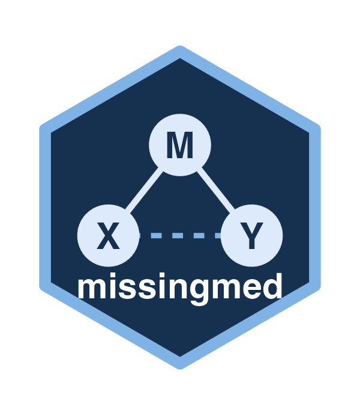

D4-stacked MBCO test of an indirect effect across imputed datasets
Source:R/mbco_mi.R
mbco_d4.RdTests \(H_0: a b = 0\) with the model-based constrained optimization (MBCO)
likelihood-ratio statistic, pooled across multiply imputed datasets with the
D4 rule (Chan & Meng, 2022; Grund, Lüdtke & Robitzsch, 2023). This is the
engine behind infer(<MDMediationFit>, type = "mbco"), exported so that
other packages can call it on a plain list of completed datasets.
Arguments
- implist
A list of at least two completed data frames, e.g.
mice::complete(imp, "all"). They must share the same columns (in any order) and number of rows, contain the treatment and mediator, and have no missing values in the model variables.- formula_y, formula_m
Outcome and mediator model formulas. The response of
formula_mmust involve the mediator and nothing else (Mor a transform such aslog(M)), and the mediator may not appear in the response offormula_y.- family_y, family_m
stats::family()objects for the two models (defaultstats::gaussian()); models are fit withstats::glm().- treatment, mediator
Names of the treatment and mediator variables.
- ariv
"fixed"(default) or"own"; see Details.
Value
An MbcoMIResult: the named numeric c(D4, p, r4, nu, d_S) with
the branch diagnostics as properties.
Details
The MBCO constraint is a branch union, \(\max(\ell_{a=0}, \ell_{b=0})\),
and nulling a path drops every term that carries it (for example both M
and X:M from Y ~ X * M). The D4 statistic is
\(D_4 = d_S / (k (1 + r_4))\), referred to \(F(k, \nu)\), where
\(d_S\) is the statistic on the stacked data divided by \(K\) and
\(r_4\) is the relative increase in variance estimated from the
per-imputation statistics. ariv chooses how those statistics are formed:
"fixed"(default): each imputation's statistic is computed on the branch (a = 0orb = 0) that the stacked constrained fit selected. Imputations that disagree on the winning branch then cannot pull \(r_4\) down, and every imputation uses the stacked fit'sk. An error is raised if that branch's constraint removes a different number of parameters in some imputation than in the stacked data (for example, a level of a factor that interacts with the treatment or mediator is absent from one imputation).kis a difference of design-matrix ranks, so a sparse level of a main-effect factor does not trigger it."own": each imputation's statistic is computed on its own winning branch (the standard Chan & Meng \(r_4\)). On full-rank designs this reproduces missingmed 0.4.0;kis now a rank difference rather than a column count, so a design with aliased columns gets a smallerk. It errors when the winning branches remove different numbers of parameters, since there is then no singlek.
Cost. Every imputation is fit three times (the full model and both
single-path nulls), plus the same three fits on the stacked data. The
ariv = "fixed" statistic alone needs only the null on the stacked branch;
the second null per imputation is what the branch diagnostics
branch_mix and p_branch_a require.
At least two imputations are required. For a single complete dataset, use a
complete-data MBCO test such as RMediation::mbco().
References
Chan, K. W., & Meng, X.-L. (2022). Multiple improvements of multiple imputation likelihood ratio tests. Statistica Sinica.
Grund, S., Lüdtke, O., & Robitzsch, A. (2023). Pooling methods for likelihood ratio tests in multiply imputed data sets. Psychological Methods, 28(5), 1207–1221. doi:10.1037/met0000556
Examples
set.seed(1)
implist <- lapply(1:3, function(i) {
n <- 200
X <- rnorm(n)
M <- 0.4 * X + rnorm(n)
data.frame(X = X, M = M, Y = 0.3 * M + rnorm(n))
})
mbco_d4(implist, Y ~ X + M, M ~ X,
treatment = "X", mediator = "M", ariv = "fixed"
)
#> <MbcoMIResult> D4-stacked MBCO test of H0: a*b = 0 (m = 3 imputations)
#> D4 = 11.14 on F(1, 513.1), p = 0.0009083
#> r4 = 0.06659 (ariv = "fixed") | d_S = 11.88
#> stacked constrained fit: b = 0 branch
#> imputations on the a = 0 branch: 0% (not mixed)